$Date: 2018-01-01 10:37:40 +0900 (2018/01/01 (月)) $
$Revision: 1282 $
Jenkins での秘密データの取り扱い (ユーザー名、パスワード)
ユーザー名やパスワードなど秘密データがビルドログに含まれてしまうのを防ぐ方法を説明します。
手順
-
Job の設定画面を出す。
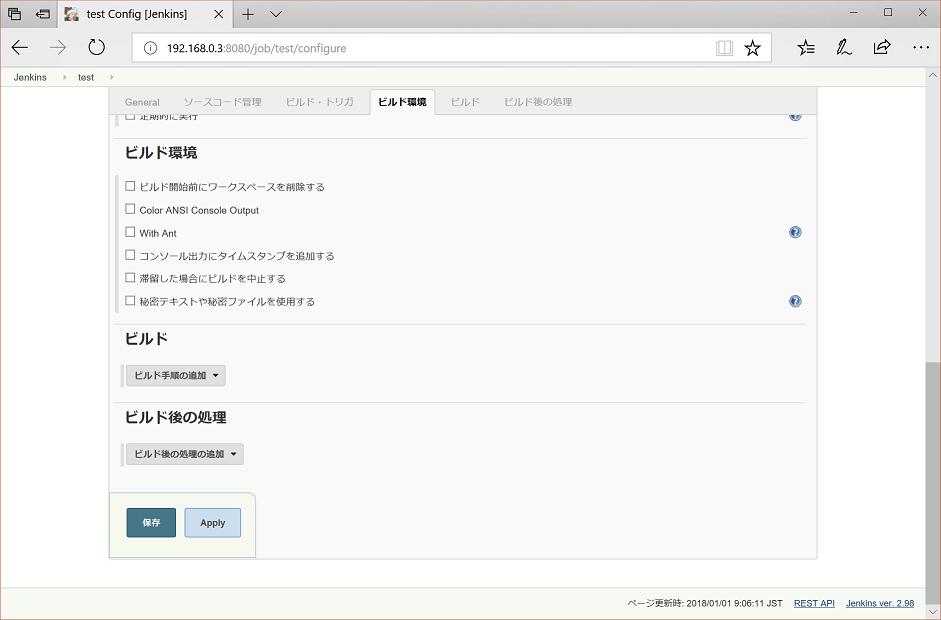
-
秘密テキストや秘密ファイルを使用するにチェックを入れる。
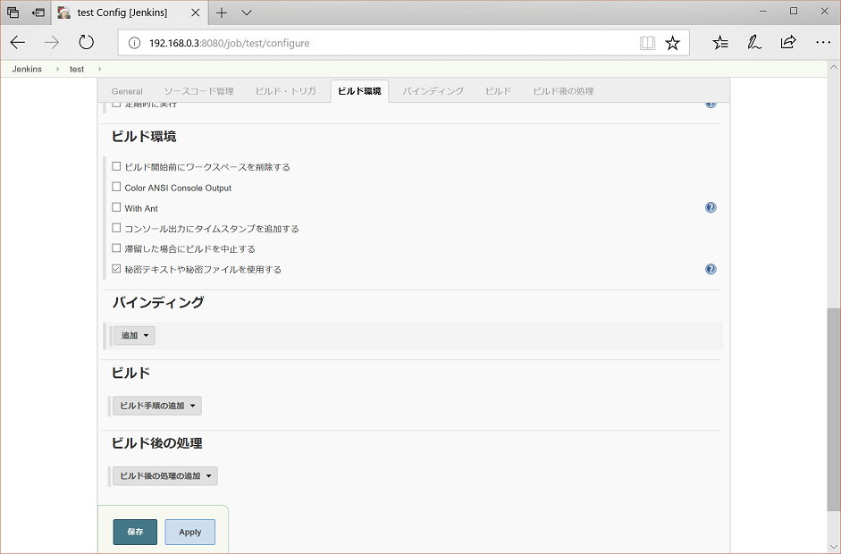
-
バインディングの追加を選び、「ユーザー名とパスワード(分離)」を選ぶ。
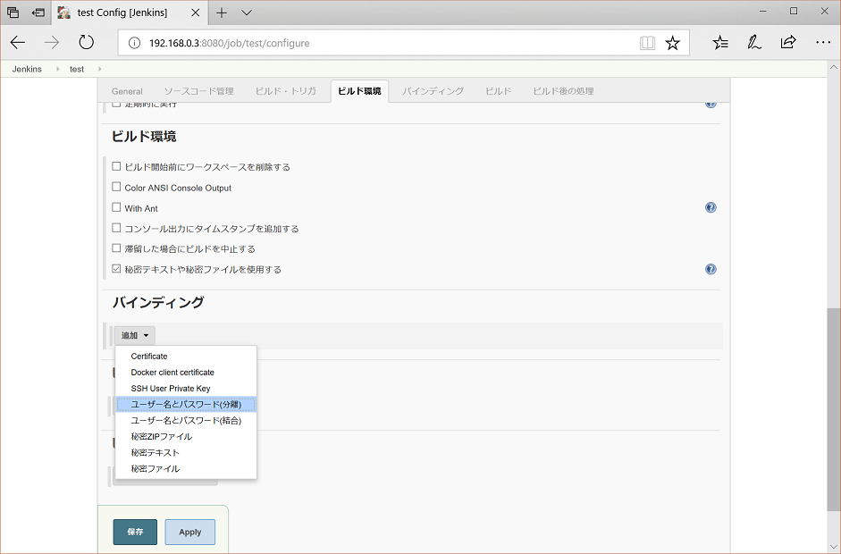
-
ユーザー名変数とパスワード変数に、変数名を入れる。
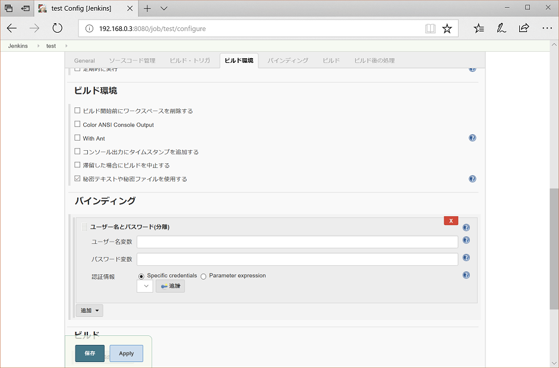
-
ユーザー名変数とパスワード変数に、USERNAME, PASSWORD と入れる。(この変数名は何でもよい。)
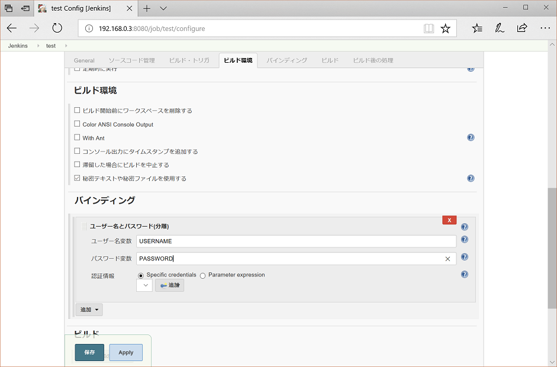
-
認証情報の下の 「追加」を押して 「Jenkins」を押す。
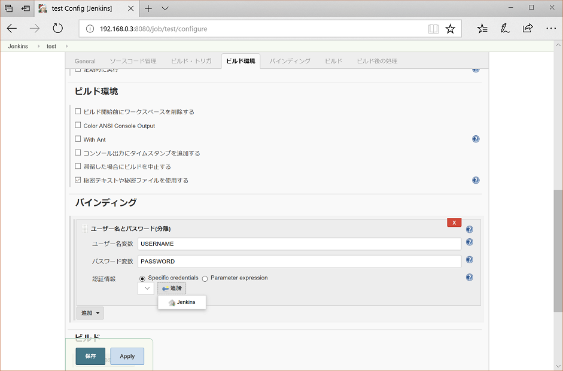
-
ユーザー名、パスワードを登録するための画面が表示される。
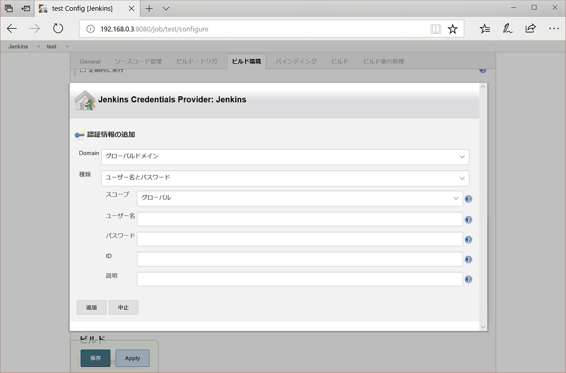
-
ユーザー名、パスワードに隠したいユーザー名とパスワードの情報を入れる。
説明のところに複数のユーザー名、パスワードを登録したときに区別できるようにするための説明を入力する。
-
前の画面で「説明」に入力した情報が表示されているのを確認できる。
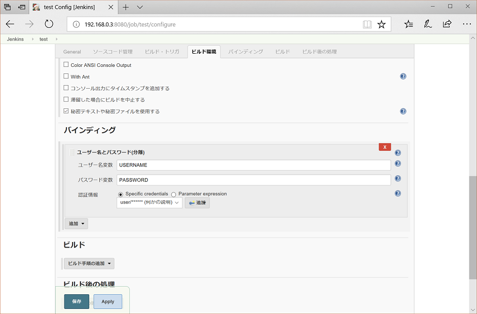
-
この手順を試したのは Linux なのでビルド手順のところで「シェルの実行」を選ぶ。
Windows の場合は、「Windowsバッチコマンドの実行」を選ぶ。
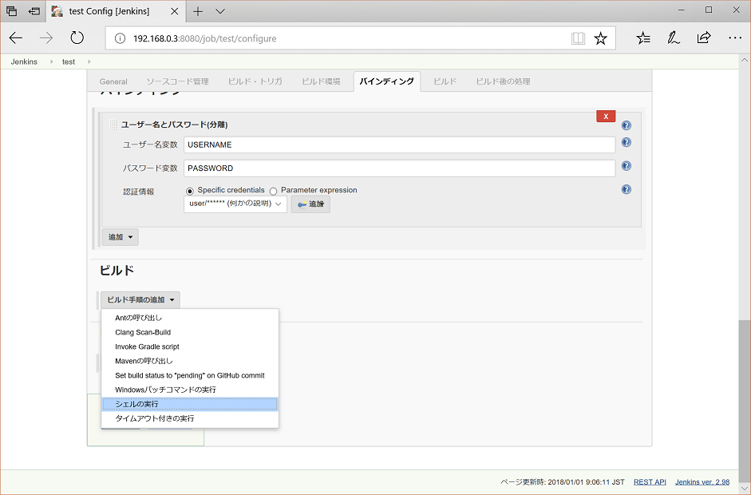
-
シェルスクリプトの欄にビルド用のコマンドを入力する。
ユーザー名を $USERNAME パスワードを $PASSWORD で参照する。(ユーザー名変数とパスワード変数で設定したもの)
(Mac でも Linux と同じ)
(windows だと %USERNAME% と %PASSWORD% とする。)
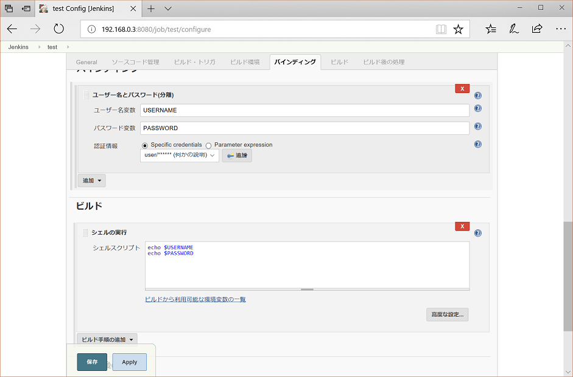
-
ビルドログで秘密情報が含まれていないのを確認できる。
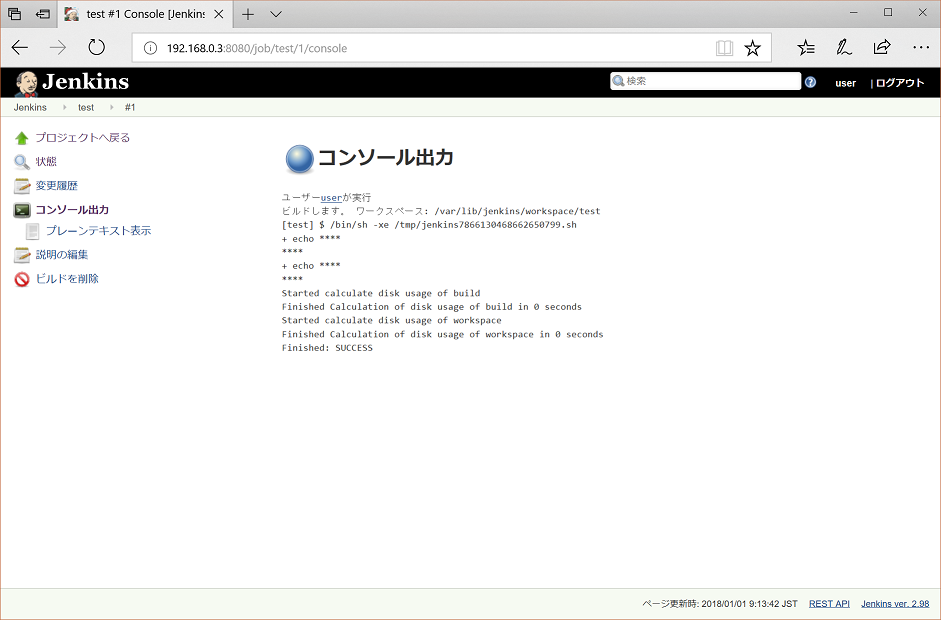